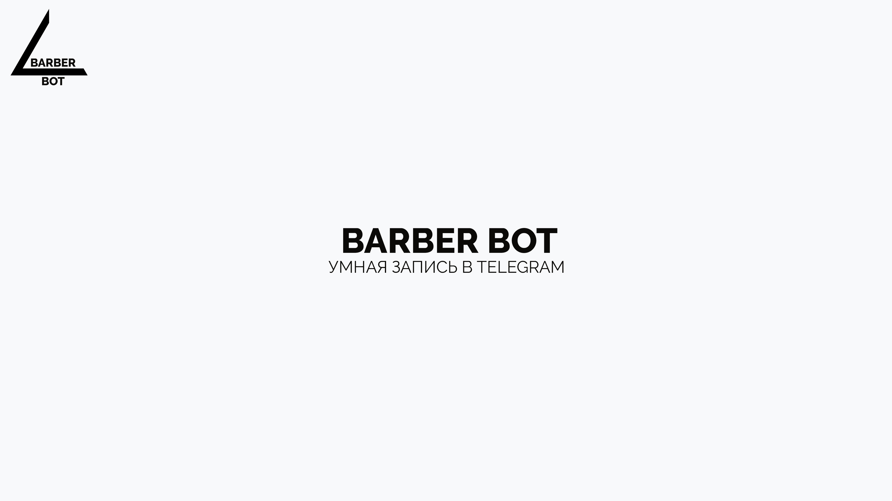

Telegram-бот для записи в барбершоп

Задача
Разработать систему автоматической записи для салонов красоты, которая снизит нагрузку на администратора и уменьшит процент неявок. Требовалась возможность гибкой настройки расписания, управление мастерами и услугами, а также автоматические напоминания клиентам.
Функционал
- Выбор услуги, мастера, даты и времени (интерактивный календарь на 14 дней).
- Расчёт доступных слотов с учётом рабочего расписания, перерывов, выходных и уже занятых записей.
- Автоматические напоминания за день и за час до записи (APScheduler).
- Полноценная админ-панель в Telegram: управление мастерами, услугами, расписанием, просмотр и редактирование записей.
- Экспорт всех записей в Google Sheets (автоматический при создании записи и ручной по команде).
- Защита от двойной записи и пересечений (проверка на уровне Python).
Технические детали
- Python 3.11, aiogram 3.10 (асинхронный фреймворк).
- SQLAlchemy 2.0 (async) + PostgreSQL (продакшен) / SQLite (разработка).
- FSM на Redis (через aiogram RedisStorage).
- Планировщик APScheduler для фоновых задач.
- Интеграция с Google Sheets API через gspread (сервисный аккаунт).
- Деплой в Docker (Dockerfile + docker-compose: бот, PostgreSQL, Redis).
Результат
Готовый продукт, который можно внедрить за день. Для среднего Московского салона (4 мастера, чек 2500 ₽) дополнительный доход от внедрения оценивается в 610 - 620 тыс. ₽/мес (экономия времени администратора, снижение неявок, рост заполняемости).